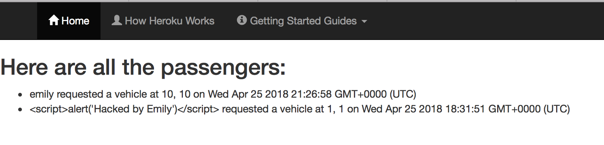
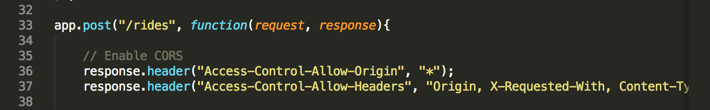
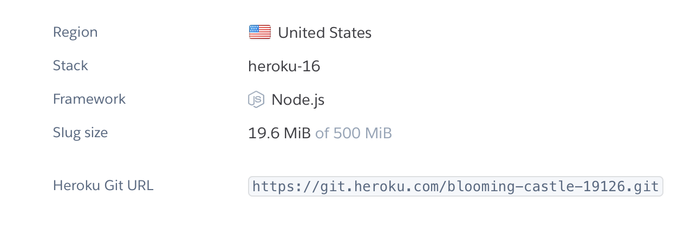

Security Assessment
Introduction
The product under consideration is the NotUber app that was made for Assignments 2 and 3 of the Comp20 class. The product is being checked for web vulnerabilities and security problems associated with the program.
Methodology
In my first attempt to find vulnerbilities, I first scanned the index.js file provided by my partner. The next thing I did was download a heroku add-on called snyk. Snyk scanned the files to check for any vulnerbilities. I then googled other ways to find vulnerbilities, including using Piazza to use the information my classmates were posting. Lastly, I went to office hours to discuss the vulnerbilities with app.
Abstract of Findings
The first issue found with the code was that the app displays the list of latitudes and longitudes when the correct URL is entered. This is an issue with the user's privacy.
The second issue found with the code was that when the web designer allowed cross origin access, he did so for everything. This is a security issue because there is no limit to who may have cross origin access to the site.
The third issue found is that there is no way to recycle data. Once there is too much data entered into the database, there will not be enough space to store more data. This causes an issue because it limits the lifespan of the app.
Issues Found
Issue #1:
- The first issue found was that the page displays the latitude and longitude of the passengers to anyone who searches the URL.
- This issue appears on the "http://blooming-castle-19126.herokuapp.com" page, but in the code, the app.get('/') path is the function that sets this page.
- In terms of privacy issues, this is a high priority issue. Passengers using this service need to feel confident that their information is not being leaked to strangers.
- I found this issue just by looking at the current app, with the help of Professor Ming. It is obvious that just by accessing the page, anyone is able to have access to this, which is an issue.
- 
- To fix this issue, a user authentication system would have to be put into place so that strangers are not allowed on the site, getting the passenger's location.
Issue #2:
- The second issue found was that the programmer allows cross origin access for everything, meaning that there is no limitation on who has cross origin access.
- This issue is found in the index.js file for the blooming-castle-19126 app.
- This has the potential to be a high-stakes issue, but because the page is not that public, it is not a high priority issue because it is unlikely that the page will be hacked by another website.
- I found this issue by noticing the asterick on line 36 of the index.js file.
- 
- To fix this issue, the programmer would remove the asterick and specify who they are allowing to have access to the site.
Issue #3:
- The third issue found is that the app currently does not have a way to recycle the data.
- This issue is found in the MongoDB database.
- This is not a very severe issue. The database has enough storage so that users would most likely not run into this issue, but eventually it has the potential to be a bigger problem.
- This issue was found by realizing that none of the databases were being cleared unless they were forced to clear.
- 
- To fix this issue, the app should automatically clear the passengers after they have been picked up by a vehicle (or after a certain elapsed time).
Conclusion
In conclusion, the issues found in this program can be easily fixed with little cost. The privacy issues can be fixed with the addition of an authentication page in order to confirm that the user who is trying to see where the passengers are is indeed a vehicle (similar to the real uber app).
References
The main resource I used for this assignment was office hours. Other resources include, "https://snyk.io/org/snyk-symmetrical-13323-heroku/", "Piazza.com", and "https://cwe.mitre.org/data/definitions/159.html".